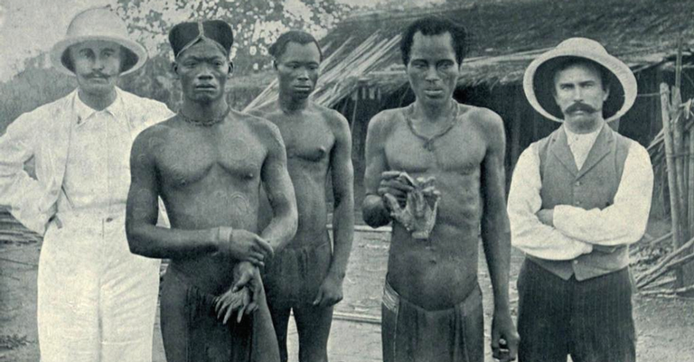

1 CONTEXTO HISTÓRICO
A história do Congo com o colonialismo é complexa e sinuosa. O país foi descoberto por Henry Morton Stanley, explorador e jornalista comissionado pelo rei Leopoldo II da Bélgica para explorar a região do Congo e estabelecer acordos comerciais com líderes locais. As expedições de Henry foram de extrema importância para a aquisição do território do Congo pelo Rei Leopoldo II da Bélgica.
Ele foi contratado para explorar a região e estabelecer acordos comerciais com líderes locais, o que contribuiu para que a Bélgica pudesse se estabelecer no território e, posteriormente, criar o Estado Livre do Congo em 1885. Stanley também atuou como o primeiro administrador dessa nova colônia. As negociações de Stanley com líderes locais foram cruciais para o estabelecimento do controle belga sobre o território do Congo.
Em 1908, o governo belga assumiu o controle da colônia de Leopoldo e tentou reformar o sistema. No entanto, a administração belga continuou a priorizar a extração de recursos em detrimento do bem-estar do povo congolês.
Durante o período colonial, o povo congolês sofreu discriminação e marginalização. Eles foram negados acesso à educação, representação política e direitos humanos básicos. As autoridades belgas também usaram táticas de divisão e conquista para enfrentar diferentes grupos étnicos uns contra os outros, exacerbando ainda mais as tensões sociais e políticas.
Como citado anteriormente, o regime colonial belga no Congo foi caracterizado por práticas extremamente brutais, como o uso generalizado de mão-de-obra forçada e a extração forçada de recursos naturais. A população do Congo sofreu enormemente durante este período, com milhões de pessoas perdendo a vida devido à violência, exploração e doenças introduzidas pelos colonizadores europeus.
As punições infligidas aos trabalhadores congoleses que não atingiam as cotas durante o período colonial no Congo eram frequentemente brutais e desumanas. Aqui estão alguns exemplos específicos:
- Chicotadas e espancamentos: de acordo com o livro "O domínio de Leopoldo na África" de Edmund Dene Morel, os trabalhadores que não conseguiam atingir as cotas eram frequentemente submetidos a espancamentos e chicotadas com um chicotte (um chicote feito de borracha ou pele de hipopótamo). Além disso, era comum que a menor resistência fosse punida com o corte das mãos. Essas punições eram realizadas em público com o objetivo de humilhar e dissuadir os demais trabalhadores.
- Prisão: trabalhadores que repetidamente não atingiam suas cotas poderiam ser presos por semanas ou mesmo meses. As prisões eram frequentemente superlotadas e insalubres, levando a doenças e mortes.
- Mutilação: na indústria da borracha, trabalhadores que não atingiam suas cotas poderiam ter os membros cortados como punição. Essa prática brutal servia como um aviso para outros trabalhadores para cumprirem suas cotas.
- Execução: em casos extremos, trabalhadores que não atingiam as cotas poderiam ser executados para manter o controle e disciplina da população.
Figura 4 - Missionários britânicos com homens segurando mãos cortadas de vítimas
Fonte: RARE HISTORICAL PHOTOS(2023)
2 ATUALMENTE
O movimento de independência congolês começou a ganhar força na década de 1950, e o país conquistou a independência da Bélgica em 1960. No entanto, a transição para a independência foi marcada por instabilidade, com tensões políticas e étnicas levando a vários períodos de guerra civil e conflito.
Durante a década de 1950, os países colonizadores europeus experimentaram um declínio em sua influência sobre suas colônias africanas, decorrente dos efeitos econômicos e políticos da Segunda Guerra Mundial.
Através dessa instabilidade, diversas nações africanas alcançaram a independência. O Congo, por sua vez, não constituiu uma exceção. Nesse contexto, partidos políticos emergiram e revoltas foram promovidas, minando gradativamente a autoridade belga sobre a nação.
Após conquistar a independência da Bélgica em 30 de junho de 1960, a República do Congo (posteriormente renomeada para República Democrática do Congo) passou por um período tumultuado marcado por instabilidade política, violência e governança autoritária.
O primeiro Primeiro-Ministro democraticamente eleito do Congo, Patrice Lumumba, foi deposto em um golpe liderado pelo coronel Mobutu Sese Seko em setembro de 1960, apenas alguns meses após a independência. Mobutu posteriormente tomou o poder em um golpe pacífico em 1965 e estabeleceu um estado de partido único, que ele governou como presidente pelos próximos 32 anos.
Durante o reinado de Mobutu, o país foi marcado por ampla corrupção, violações dos direitos humanos e declínio econômico. O regime de Mobutu foi caracterizado por um culto à personalidade e um sistema de patronagem, que favorecia membros de seu próprio grupo étnico e outros leais.
Ele acumulou uma fortuna pessoal enquanto negligenciava a infraestrutura e os serviços sociais do país, e seu regime foi notório pela supressão da oposição política e dissidência.
O governo de Mobutu chegou ao fim em 1997, quando ele foi deposto por uma rebelião liderada por Laurent-Désiré Kabila, que se tornou o novo presidente. No entanto, Kabila também governou com mão de ferro e foi acusado de violações dos direitos humanos e corrupção.
Kabila foi assassinado em 2001, e seu filho Joseph Kabila o sucedeu como presidente. Joseph Kabila continuou o legado de governança autoritária de seu pai até ser obrigado a renunciar em 2019 após protestos generalizados e pressão internacional, passando o poder para Tshisekedi de maneira pacífica, fato que nunca tinha acontecido desde 1960.
Atualmente, a República Democrática do Congo permanece um Estado frágil com uma história de violência política, conflito étnico e instabilidade econômica.
Figura 5 - Capital do Congo Kinshasa

Fonte: BRITANNICA, 2023